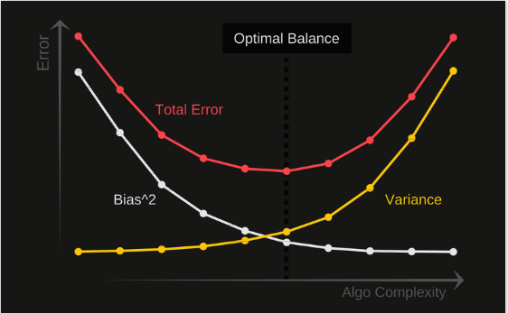

There is a very delicate balancing act when machine learning algorithms try to predict things. On the one hand, we want our algorithm to model the training data very closely, otherwise we’ll miss relevant features and interesting trends. However, on the other hand we don’t want our model to fit too closely, and risk over-interpreting every outlier and irregularity.
The best we can do is try to settle somewhere in the middle of the spectrum, where the purple pointer is.
